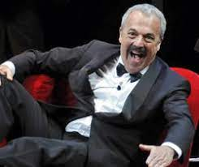
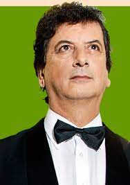

Integrantes
-
Placeholder content for this accordion, which is intended to demonstrate the
.accordion-flushclass. This is the third item's accordion body. Nothing more exciting happening here in terms of content, but just filling up the space to make it look, at least at first glance, a bit more representative of how this would look in a real-world application. 
Ernesto Acher (1971–1986)
- 
Daniel Rabinovich (1967–2015)

Carlos Núñez Cortés(1969-2017)

Marcos Mundstock (1967–2020)

Carlos López Puccio(1967–actualidad)

Jorge Maronna(1967–actualidad)
- 
>Horacio Turano (2015-actualidad)

Martín O'Connor (2015-actualidad)